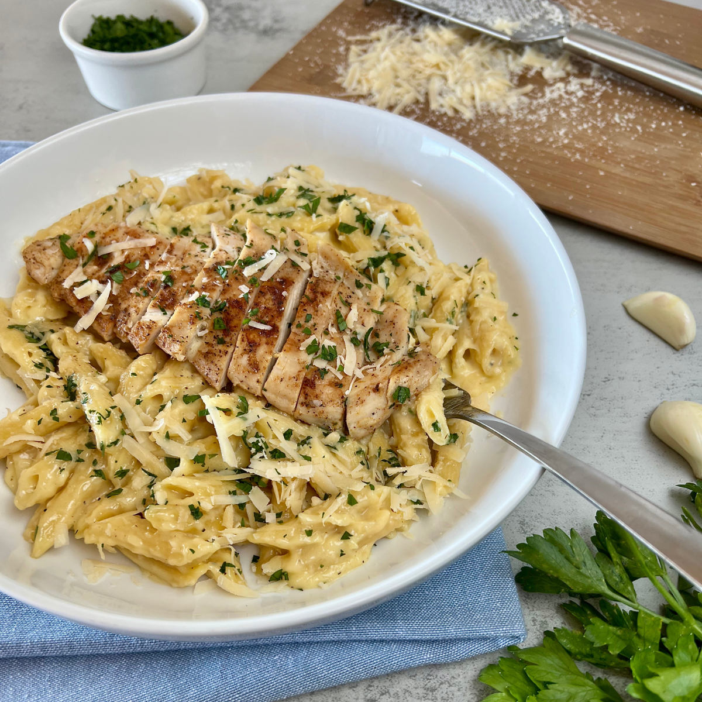

Chicken Alfredo Pasta

Description
This chicken Alfredo pasta recipe is a creamy and comforting dish thats easy to make. It features tender chicken, rich Alfredo sauce, and perfectly cooked pasta. Serve it with a sprinkle of Parmesan and fresh parsley for a delicious, satisfying meal.
Serves 4 with a prep time of 5 minutes and a cook time of 15 minutes.
Recipe from: allrecipes
Ingredients
- 1 pound uncooked pasta of choice
- 2 boneless chicken breast halves, cooked and cubed
- 1 (16 ounce) jar Alfredo-style pasta sauce
- 1 (10 ounce) package frozen mixed vegetables
- 1 bunch of parsley
- Parmesan cheese
- 1/3 cup milk
Steps
- Fill a large pot with salted water and bring to a boil. Cook pasta at a boil until tender yet firm to the bite, about 8 minutes. Drain well.
- While the pasta is cooking, place cubed cooked chicken, Alfredo sauce, frozen vegetables, and milk in a large saucepan over medium-low heat. Cook and stir until chicken is heated through and vegetables are tender.
- Serve warm Alfredo and chicken sauce over cooked noodles and sprinkle Parmesan and parsley on top.
Home